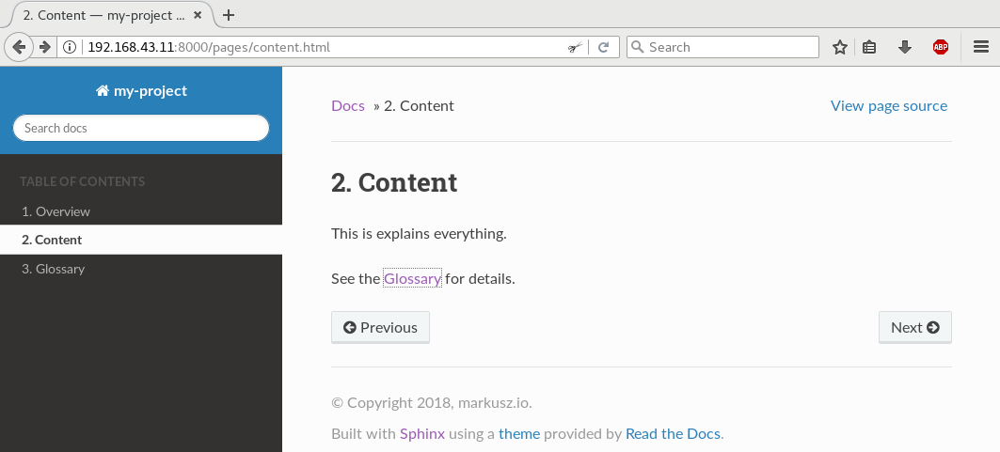

Project documentation with reStructuredText and Sphinx
When it comes to documenting your project, especially the non-code parts, you might face a plethora of opinions what the “correct approach” might be. Some love Word documents, some favor PowerPoint slides and some like documents written in a markup language. I’m one of the latter. This post will show my favorite, reStructuredText with Sphinx. It will list the capabilities I usually need when documenting, and how to do it with the features of Sphinx and reStructuredText.
| Date | Change description |
|---|---|
| 2018-02-02 | The first release |
Use Case
The main benefit of using a markup languages like reStructuredText is, that you can treat your documentation like code. This includes doing reviews and adding it to version control.
Another benefit is, that the plain text files work on every platform. Be it Mac, Windows or Linux. Using a Windows virtual machine to work with PowerPoint files can be cumbersome sometimes.
Github and other web based source code management systems are usually able to render markup language files of your project directly in the browser, which is kinda neat.
Minimal example
Let’s start small. We need two files:
- The first file
conf.pywill configure Sphinx. - The second file
index.rstcontains our content. To be precise, this file is the main entry point to all doc files we will have. More on that later.
Create the file conf.py and add this content:
1 2 3 4 | project = 'my-project'
copyright = '2018, markusz.io'
author = 'MZ'
master_doc = 'index'
|
We could even start without these config options, but it’s very likely
that your project documentation needs this. If you don’t use index
for the master_doc option, you have to name the main content file
content.rst instead of index.rst. The benefit of using index.rst
is based on the behavior of most web servers to look for an HTML file named
index and to serve this file when pointed to a path. This results
usually in URLs which are a little nicer to look at, at least in my
opinion. The full list of config options is at [1].
Create the file index.rst and add this content:
1 2 3 4 5 | ============
Project Docs
============
This documents our project.
|
Install Sphinx with the Python package manager pip:
1 2 3 | $ sudo apt-get update
$ sudo apt-get install -y python-pip
$ sudo pip install sphinx
|
Build the documentation:
1 | $ sphinx-build -b html -q -W -n . _build
|
The parameters of the command sphinx-build in detail:
-b html: Sphinx can create multiple different formats. It uses a concept of builders. We chose the HTML builder here.-q: Builds quietly and only emits warnings and errors. This is optional.-W: Treats warnings as errors. If an error occurs, the build gets canceled. This is optional, but I very much recommend it.-n: Run in a nit-picky mode. This is also optional, but there’s no reason to start sloppy..: The input directory. This needs to be the directory where theconf.pyfile is._build: The output directory.
The result looks like this:

Note
Sphinx does not come with a built-in web server. I usually help myself with the minimal web server which comes with Python:
$ cd _build
$ python -m SimpleHTTPServer & # python3 -m http.server &
$ firefox localhost:8000
You can also simply point your browser to the built index.html
file. It works either way.
With this as a starting point, I’ll go through the different aspects I usually need when writing documentation and how they can be done with Sphinx and reStructuredText.
The main features
The minimal example above will probably not bring you very far. Below are the things I (and maybe you) usually need when writing docs. I won’t show the trivial things every markup language has, like the inclusion of images and formatting of text. You’ll find a very good starting point for that at [2].
Use different themes
Sphinx uses themes for styling the content. The default theme is called Alabaster. That’s the one you’ve seen in the image before. It’s a good start for creating your own theme (I won’t cover this here, more info at [3]) but it’s very simplistic and unfortunately not mobile friendly (you maybe have noticed that the text is cut off in the bottom right corner). Let’s change it to use a theme you know from ReadTheDocs:
Install the theme:
1 | $ sudo pip install sphinx_rtd_theme
|
Add a new config option to conf.py:
1 | html_theme = 'sphinx_rtd_theme'
|
Build the docs again like before:
1 | $ sphinx-build -b html -q -W -n . _build
|
The result looks like this:
{kind=link}
More details about the theme support can be found at [3].
Show code examples
Code blocks can be shown in different ways. The first way has the code inline in the document itself:
1 2 3 4 5 | .. code-block:: python
:linenos:
:emphasize-lines: 0
print("hello blog")
|
The second way does a literal include of the file:
1 2 3 4 | .. literalinclude:: example.ini
:language: ini
:linenos:
:emphasize-lines: 5
|
This second example renders like this:
{kind=link}
Note
The wrong alignment between line numbers and lines is a bug in the theme. It is already solved but not released yet [4].
The file inclusion is a nice way and easy to maintain. It also allows to use the actual code or config files, which can be tested for correctness. If we would include them in the doc file itself, like in the example before, it would be a lot harder to verify the correctness.
The highlighting works for around 300 languages and text format, thanks to Pygments [5]. The ability to emphasize specific lines is very helpful in longer code examples when you want to set a focus.
Structure your docs
The key is the toctree magic of Sphinx [6]. Our updated
index.rst file looks like this:
1 2 3 4 5 6 7 8 9 10 11 12 13 14 | ============
Project Docs
============
This documents our project.
.. toctree::
:caption: Table of Contents
:maxdepth: 2
:numbered:
pages/overview
pages/content
pages/glossary
|
This means there is a directory pages on the same level as the
index.rst. This directory contains three files named overview.rst,
content.rst and glossary.rst.
{kind=link}
It’s also possible to use globbing, so you don’t have to add every
new page manually to this list. It’s worth to spend a minute or two
to understand the toctree.
Cross-reference between pages
Add a label which plays the role as a jump mark, like I did with
.. _the-glossary: in file glossary.rst here:
1 2 3 4 5 6 7 | .. _the-glossary:
========
Glossary
========
This is a glossary.
|
Now you can use this as value for the :ref: role [7]:
1 2 3 4 5 6 7 | =======
Content
=======
This is explains everything.
See the :ref:`the-glossary` for details.
|
This renders in HTML as:
{kind=link}

Notice that the label is now part of the URL you jump to.
The ref magic is the most flexible way and easiest way to link parts
of your documentation in my opinion.
Split page content over multiple files
1 2 3 4 5 6 7 8 9 | =======
Content
=======
This is explains everything.
.. include:: part1.inc
.. include:: part2.inc
|
Where the two referenced files are:
part1.inc:1
paragraph 1
part2.inc:1
paragraph 2

The content of those included files is normal reStructuredText. The
file extension *.inc is only a convention. With that mechanism,
you can also write re-usable pieces of text, for example in use-case
centered documentation of the features of your project, where every
page should be able to stand on its own, but you want to have the same
same introduction on every page without doing a copy and paste every time.
Splitting the content can also help to decrease the likelihood of merge conflicts when you work with multiple people on the same page at the same time.
Add tables efficiently
Create a file which holds your data, for example table.csv:
1 2 3 4 | "Treat", "Quantity", "Description"
"Albatross", 2.99, "On a stick!"
"Crunchy Frog", 1.49, "If we took the bones out, it wouldn't be crunchy, now would it?"
"Gannet Ripple", 1.99, "On a stick!"
|
Use the csv-table directive and point it to the CSV file:
1 2 3 4 | .. csv-table::
:file: table.csv
:header-rows: 1
:widths: 15, 10, 30
|
The result looks like this:
{kind=link}
It’s also possible to add the table inline in your document:
1 2 3 4 5 6 7 8 9 | .. table:: Truth table for "not"
:widths: auto
===== =====
A not A
===== =====
False True
True False
===== =====
|
This can become cumbersome though. It’s a case-by-case decision you have to make.
Use constants for words or phrases
Repetition of certain terms and phrases is a good thing in documentation. It reinforces the connection of an idea to a term. This can be boring to type sometimes. Programming languages usually use constants for that and Sphinx can do that too. For example, my earlier post about Elasticsearch (see Elastic Stack (formerly ELK) - Elasticsearch) used that word in that format multiple times in the post.
1 2 3 | .. |es| replace:: *Elasticsearch*
Store your logs in |es|.
|
The first line defines the constant named |es|, while the later after
it uses its to include the value during the docs build.
In my opinion, the maintainability of the docs get increased with such a feature, because I don’t care about a sudden renaming anymore. I go and change the constant definition on one place and that place only.
Show a per-page table of contents
The sections link back to the table of contents. This makes jumps back and forth easy.
1 2 3 4 5 6 7 8 9 10 11 12 13 14 15 16 17 | This is an overview.
.. contents::
:local:
:backlinks: top
section 1
=========
sub-section 1
-------------
sub-section 2
-------------
section 2
=========
|

This is useful for longer pages which have multiple sections on it.
Use external references
When referencing sources outside of docs project, I’d recommend to use the auto-numbered footnotes [8] feature.
1 2 3 4 5 6 | Reference to external sources with auto-numbered footnotes [#footnotes]_
References
==========
.. [#footnotes] http://www.sphinx-doc.org/en/stable/rest.html#footnotes
|
This gets rendered as:
{kind=link}
This gives your page an article like reference style which, in my personal
view, increases the readability. It’s also easier to reference to the
same link multiple times. Should that link change, change only the
one in the References section at the very end of the page. It also
helps in case you want to output your docs in PDFs or are even crazy
enough to print it on paper.
Highlight important parts
Adding highlighted boxes to draw attention to the more important pieces of information is also already built-in:
1 2 3 4 5 | .. note:: This is a note.
.. warning:: This is a warning.
.. important:: This is important.
|
This renders as:

When skimming pages, they can give the readers some kind of anchor points which are easy to recognize. Don’t go overboard though. If you’re lucky enough to have access to good technical writers, go ask them and do as they say (or do not; I’m not your boss).
Reasons why I bet on Sphinx and reStructuredText
- It’s a very popular and successfully used documentation engine for the Python community, which means to me that it won’t vanish in the near future.
- It’s around since the early 2000s and the teething troubles are all solved. It’s stable and I find a lot of examples online.
- There is only one reStructuredText spec [9]. As nice as Markdown is, but do we really need all those different flavors? Honestly, I do not.
- Extensibility is a base concept in Sphinx [10]. There’s a very good chance that my problem is already solved by someone with an extension. If not, there is a defined way to write an extension. I’ll cover that in a follow-up post.
- It’s easy to configure and well documented and simply gets the job done. A real-life example can be seen at OpenStack [11]. They do all their docs with Sphinx.
Conclusion
This post showed only a sub-set of the possibilities with Sphinx and reStructuredText. Other features I didn’t mention but could be interesting for you are:
This list is not exhaustive. There’s even more. Now go and write good docs. :)
References
| [1] | http://www.sphinx-doc.org/en/stable/config.html |
| [2] | http://www.sphinx-doc.org/en/stable/rest.html |
| [3] | (1, 2) http://www.sphinx-doc.org/en/stable/theming.html |
| [4] | https://github.com/rtfd/sphinx_rtd_theme/issues/417 |
| [5] | http://pygments.org/ |
| [6] | http://www.sphinx-doc.org/en/stable/markup/toctree.html |
| [7] | http://www.sphinx-doc.org/en/stable/markup/inline.html#cross-referencing-arbitrary-locations |
| [8] | http://www.sphinx-doc.org/en/stable/rest.html#footnotes |
| [9] | http://docutils.sourceforge.net/docs/ref/rst/restructuredtext.html |
| [10] | http://www.sphinx-doc.org/en/stable/extensions.html |
| [11] | https://docs.openstack.org/ |
| [12] | http://www.sphinx-doc.org/en/stable/markup/para.html#directive-glossary |
| [13] | http://www.sphinx-doc.org/en/stable/intl.html |
| [14] | http://www.sphinx-doc.org/en/stable/config.html#options-for-latex-output |